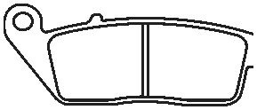

Specifications
General Specifications
Service Data

FA196102 × 39 × 10 mmEBC shape badges show the actual pad diagram, code and published dimensions. Diagrams reproduced with written permission from EBC.
Torque Specifications
A verified model-specific torque table is not yet available for this model. The values below are single typical reference figures for common motorcycle fasteners — always confirm against the workshop manual before use.
| Component | Torque | Notes |
|---|---|---|
| Oil drain plug | 25 Nm | Typical value; use a new crush washer |
| Front axle nut | 65 Nm | Typical value; varies with axle design |
| Rear axle nut | 100 Nm | Typical value; check locking method |
| Front brake caliper bolts | 30 Nm | Typical value; use threadlocker if specified |
| Spark plugs | 14 Nm | Typical value; do not overtighten |
| CVT cover bolts | 10 Nm | Typical value; tighten evenly |
| Exhaust mounting bolts | 22 Nm | Typical value; check alignment |
Frequently Asked Questions
How much horsepower (BHP) does the ADV 350 make?
The Honda ADV 350 is rated at 29 hp (21 kW) @ 7,500 rpm.
What is the torque of the Honda ADV 350?
Manufacturer-claimed peak torque is 31.5 Nm @ 5,250 rpm.
What is the engine displacement of the Honda ADV 350?
The Honda ADV 350 is listed with a 330 cc engine.
What is the seat height of the Honda ADV 350?
The seat height is listed as 795 mm. Seat width and suspension sag also affect reach.
How much does the Honda ADV 350 weigh?
The kerb weight is listed as 186 kg.
What is the power-to-weight ratio of the Honda ADV 350?
Using the listed 29 hp (21 kW) and 186 kg, the calculated ratio is about 156 hp per tonne (0.12 kW/kg).
Is the Honda ADV 350 suitable for beginners?
On the site's beginner shortlist criteria (50 hp or less, 200 kg or less and an 800 mm seat or lower), the Honda ADV 350 qualifies at 29 hp (21 kW) @ 7,500 rpm, 186 kg and 795 mm. Rider training and individual fit still matter.
Is the Honda ADV 350 A2-legal?
On the listed figures it fits the European A2 limits: about 21.6 kW and 0.12 kW/kg. Market-specific approval and restricted variants can differ.
Is the Honda ADV 350 suitable for shorter riders?
The seat is listed at 795 mm, which is moderate by the site's seat-height bands (760 mm or lower low, 761–800 mm moderate, 801–830 mm tall, above 830 mm very tall). Seat width, suspension sag and rider inseam also affect reach.
What is the fuel capacity of the Honda ADV 350?
Fuel capacity is listed as 11.7 L.
What tyres does the ADV 350 use?
Tyre sizes are listed as 120/70-15 front, 150/70-14 rear.
Does the Honda ADV 350 have ABS?
The Honda ADV 350 is listed with Dual-channel ABS.
What suspension does the Honda ADV 350 use?
Front: 37 mm inverted fork. Rear: Twin shocks.
What brakes does the Honda ADV 350 use?
Front: 256 mm disc. Rear: 240 mm disc.
What battery does the ADV 350 use?
The listed battery code is YTZ10S. Battery rating: 12V 8.6Ah. Confirm terminal layout and case dimensions against the battery fitted to your machine.
What brake pads does the ADV 350 use?
Front: EBC FA196 · SBS 183MS. Rear: SBS 193MS. These are pad-shape references; confirm the compound and exact model year before ordering.
What is the engine oil capacity of the Honda ADV 350?
Engine oil capacity is 1.5 L (1.6 US qt) and the recommended grade is SAE 10W-30, JASO MB. Confirm the exact fill procedure in the owner's or workshop manual.
Specifications are manufacturer-claimed and can vary by model year and market. Confirm service limits and torque values against the owner's or workshop manual. Data updated 2026-11-22.